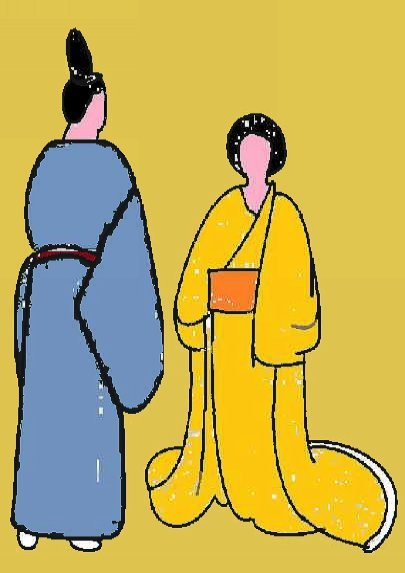
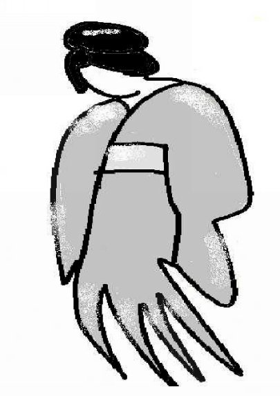
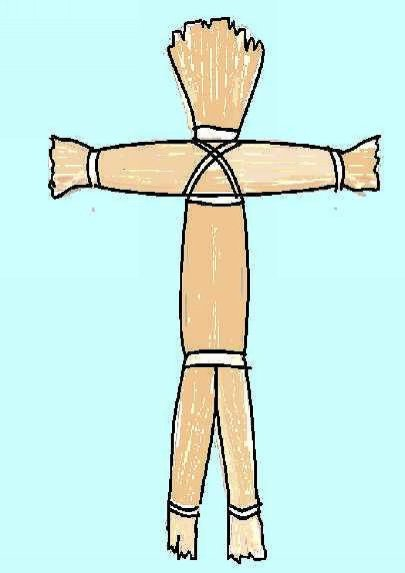
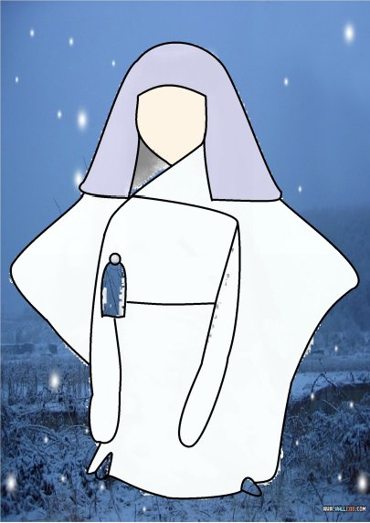
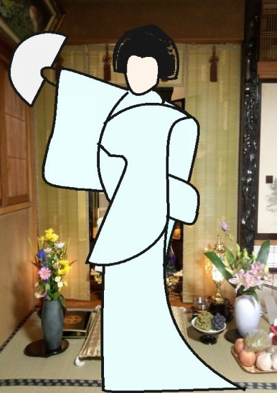
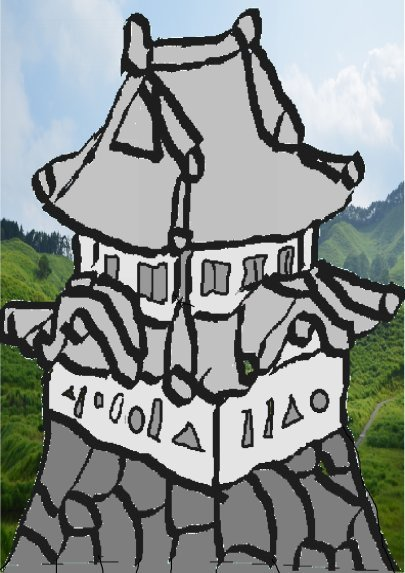
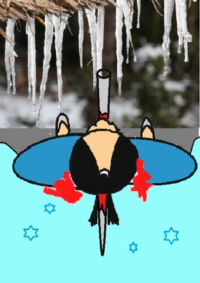
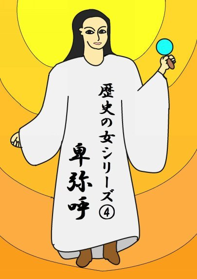
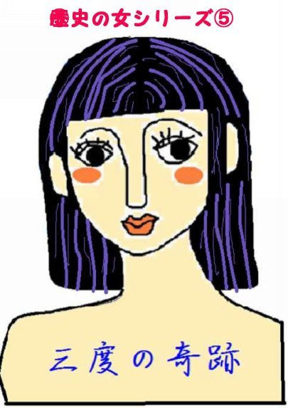

| ⑧雪姫 | |
| 深川龍 | |
| UNKNOWN (2016) | |
第八話
鈴鹿山脈の滋賀県側にある政所はお茶の産地として知られ宇治は茶所、茶は政所と言われたほどじゃった。
いつの頃か、政所の長者は冬至の夜に不思議な夢を見たそうじゃ。
「ワラワは雪姫と申す申すものじゃ。雪が降る大寒の日の夜に、雪人形を造りて床の間に飾り、茶碗一杯の白飯、一盛の花餅、小皿一杯の白豆、高坏一杯 の白胡麻を供えよ。白酒も忘れずにな。さすれば、今年も政所の村は豊作になろう。」
雪姫はそう言って、その夢の中に消えた。
翌日、長者は朝から何となくぼんやりしておった。いつもと違う長者の様子に、妻女は心配になった。
「何ぞ、心を痛めることでも出来なすったか。」
長者の目はなおも空ろじゃった。
「雪姫を祀らねばならぬ。」
妻女は長者がまだ夢の中にいるのではないかと思うた。
「何、雪姫じゃとな。それはどなたのことじゃ。」
長者は軽いため息をついた。
「どなたかは分からぬが、それは美しい女子じゃった。」

妻女は笑いながら、長者の脇腹をぎゅっとつねった。
「まあ、この人ったら。」
「痛たっ、痛い。」
やっと、長者は我に返った。
冬至の前日の夜が来た。長者はまたもや不思議な夢を見た。
「冬至の夜に、ワラワの言うたこと、覚えていやるか。
明日はお昼頃から、雪が降り始めようぞ。さらさら、さらさらと降り積もる。
じゃによって、雪人形を作り、お供えをして、ワラワを祀って下されや。
祀らなかったら、よいな、そなたは凍え死ぬ。」

「明日の夜でござるか。」
雪姫の冷たい手が眠っている長者の頬をすっーと撫でた。
翌朝、またもや、ぼんやりしている長者を見て、妻女は心配になった。
「どうなすった。顔色がお悪い。」
長者の頬が軽く痙攣した。
「今夜は雪姫を祀らねばならぬ。」
妻女はもう笑わなかった。
「お祀りしましょうぞ。あんた様に何ぞ祟りでもあると困る。」
妻女は早速、餅つきの用意をし、米を研ぎ、大豆を水

に浸した。長者は藁を芯にしてして雪人形を作った。
雪は降り止まず、夜になるころには膝をこす深さになった。長者は女中から、小者に至るまで、家中のものを座敷に集めた。
雪人形は五寸ローソクに左右から照らされて白く浮き立っている。部屋の隅々にある燭台の灯が微かに揺れておった。
長者はとりあえず、雪人形に向かって深々と礼をした。雪人形は仏さまでも、神さまでもない。どう拝めばよいか分からないのじゃった。
その時、雪人形の周囲がスノウダストに包まれたかの

ようにきらきら輝き始めた。
「ワラワは雪姫じゃ。長者殿、大儀であったのう。」
雪人形はこの世のものとも思われぬほど美しい娘の姿に変わっておった。
長者の妻女は思わず両掌を合わせた。
「ああ、勿体なや。」
家中の者は妻女にならって両掌を合わせた。
雪姫はご飯を一箸、ふっくらと柔らかな花餅を一かけら、白い煮豆を二、三粒、炒った白胡麻を少々口に入れてほほ笑んだ。
「美味じゃ。お礼に一差し舞って進ぜよう。」
雪姫が立ち上がると、あたりは天上から降り注いで来る得も言われぬ音曲に包まれた。光を放っているような雪姫の真っ白な振り袖が羽衣のように空間に舞った。
《ユズリオの、スエは栄えん、ユズリオの、・・・・・》
雪姫は一差し舞い終わると、それぞれに白酒を注いで廻った。
「長寿の酒にござります。どうぞ、長生きなされませ。」
雪姫は長者と妻女には二杯目、三杯目を注いだ。
「雪姫殿にちょうだいした白酒はこりゃあ何じゃ。これこそまさに甘露じゃ。」
雪姫はさらに一差し舞った。家中のものは再び、息をするのも忘れたかのように、雪姫の唄に聞き入り舞に見

入る。
雪姫が床の間に座った。何と、雪姫はそのまま元の雪人形に戻っておった。
妻女が我に還った。
「ひとときの法楽じゃった。」
家中のものはなおも余韻に浸って黙っておった。
長者の家の出来事はあっと言う間に世間に知れ渡った。
それを聞いた領主は是非とも自分の目で雪姫の舞いが見たいと思った。早速、長者を城に呼び寄せた。
「どのようにすれば、雪姫を呼ぶことができるのじゃ。」
長者は顔を上げて、脇息にもたれておる領主の脂ぎっ

た顔を見た。
「大寒中に、雪人形を造って床の間に飾り、白飯、白い花餅、白豆、白胡麻、 白酒をお供えするのでござります。」
「分かった。そうじゃ、早くせねば大寒が明ける。」
「今夜はこの分では大雪でござりましょう。」
領主は長者が帰った後で、家老を呼んだ。
「今から、雪姫を呼ぶ準備をいたせ。
そうじゃ。播磨より取り寄せた真っ白な塩もある。」
家老は塩、米、餅、豆、胡麻、白酒を床の間の雪人形の前に供えた。
長者が家に帰り着いたころには、雪は寸尺先も見えぬほど激しく降っておった。
城の奥座敷では領主が一人、床の間に向かって座っておった。百貫ロウソクが雪人形を照らしている。やがて、雪人形がスノウダストに包まれてきらきらと輝き始めると、そこに雪姫が現れた。
「ワラワは雪姫じゃ。今宵はそなた一人でワラワを呼んだのか。」
「おお、雪姫、よくぞ来た。今宵は美しいそなたと二人っきりじゃ。皆のもの は下がらせてある。」
「ワラワの好物は白いご飯に、つきたての花餅、炊き立ての豆、炒りたての胡麻 じゃ。じゃが、これは白米、硬い切り餅、生大豆、生胡麻ではないか。こん な物そなたでも食えまい。」
雪姫は怒って、お供え物をぶちまけた。
「これはまた気のつかぬことであった。」
雪姫はきげんが悪い。
「塩は嫌いじゃ。すぐに捨てよ。」
雪姫の言うままに、領主は戸の外に塩を撒き捨てた。塩がかかった所は雪が溶けて地面が見えた。
「さぁて、これで供えたものがすべて台なしになった。」
「よい、白酒があるではないか。」
雪姫は領主の盃に白酒を注いだ。領主は雪姫の機嫌が直ったのかと思うた。
「そなたの舞いを所望したい。」
雪姫は立ち上がると、しずしずと舞い始めた。
《ユズリオの、スエはさかえん、ユズリオの、・・・・・》
領主は雪姫が注いだ盃を傾けておった。
「ユズリオか。どこかで聞いたような曲。」
雪姫は舞いながら、領主を見下ろした。
「ワラワを見忘れたかや。」
領主ははっと盃を手離して、雪姫の赤い目を見た。
雪姫は舞いを繰り返す。
《ユズリオの、スエはさかえん、・・・・・》
「おお、そなたはもしかして、滅び去ったユズリオの。
ユズリオ城の姫。」
ユズリオ城とは鈴鹿山脈の竜ヶ岳のすぐ近くの滋賀県東近江市杠葉尾町にあったと聞くごく小さな城じゃ。
「ワラワは今宵を一日千秋の思いで待った。
我がユズリオの一族をだまし討ちにして滅ぼしたのはそなた。」
雪姫は氷で出来た剣をすらりと抜いて、領主の目の前に突き出した。領主は酔いが回って呂律が回らない。
「まっ、待ってくれ。」
領主はがたがたと雨戸を開けて、雪の庭に飛び出した。
雪姫はふわりと、雪の庭に降りた。
「逃げても無駄じゃ。我が一族の積年の恨み、はらしてくりょうぞ。」
「誰か、助けてくりゃれっ。」
雪を被って家も眠り、木も眠り、石も眠っておった。誰も気づかなんだ。
雪姫はにやりと笑ろうた。
翌朝、家老は喉を先が尖った氷の柱で突き抜かれて、軒先に倒れている領主を見つけた。
「さても、ご領主は昨夜、酒に酔われて庭にでも出よう

となされたか。」
茅葺の屋根からは何本も尖った太い氷柱が下がっておった。 （完）
深川龍の
歴史の女シリーズ③、④も
読んでください。


- 1 -